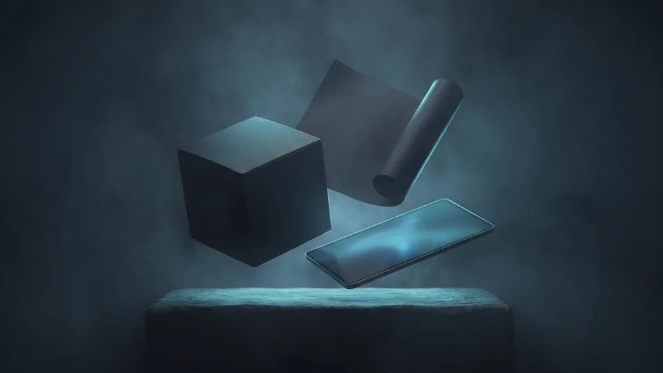

Kurumsal Grafik Tasarım Nedir, Hangi Çıktıları Kapsar?
Kurumsal grafik tasarım, bir markanın logo, kimlik seti, baskı işleri ve dijital görsellerini üreten tasarım disiplinidir. Bu çıktıların tamamı ortak bir görsel dili taşır. Kapsamı tek bir logodan ibaret değildir. Kartvizitten ambalaja, katalogdan web bannerına uzanan geniş bir çıktı yelpazesini içerir. Amaç, markanın her temas noktasında aynı karakterle görünmesidir.
Görsel Çıktı Yelpazesi Neden Bu Kadar Geniş?
Müşteriniz markayla farklı yüzeylerde karşılaşır: telefon ekranı, mağaza rafı, fuar standı, fatura zarfı. Her yüzeyin boyutu ve ışığı değişir; her yüzey kendi çıktısını ister. Bu geniş çıktı yelpazesi bir lüks değil, temas noktalarının doğal sonucudur. Küçük bir işletme bile gün içinde birden çok görsel çıktıyla iş yapar.Logo ve Kimlik Setinde Karşınıza Neler Çıkar?
Logo, kimlik setinin merkezindeki en küçük ama en görünür çıktıdır. Kartvizit, antetli kağıt, e-posta imzası ve zarf onu çevreler. Markanız böylece her yerde tutarlı ve aynı yüzle görünür. Bu bütünlüğü tek çatı altında planlamak, parça parça üretimden daha tutarlı sonuç verir.
Logo: Markanın En Küçük Sahnesi
Amblem ve logotayp aynı ailenin iki üyesidir: amblem simgeyi, logotayp yazıyı taşır. İyi bir logo kartvizitte küçülür, tabelada büyür ve iki boyutta da okunur kalır. Teslimde renkli, tek renk ve negatif zemin sürümlerini bir arada görürsünüz.Kimlik Setinde Hangi Parçalar Yer Alır?
Tipik bir sette kartvizit, antetli kağıt, zarf, dosya, e-posta imzası ve sunum şablonu bulunur. Sahada çalışan ekipler için personel kartı ile araç giydirme de yelpazeye eklenir.Marka Kılavuzunda Ne Görürsünüz?
Marka kılavuzu, logonun kullanım kurallarını, renk kodlarını ve yazı karakterlerini tek dosyada toplayan başvuru belgesidir. Kılavuz sayesinde matbaa, web ekibi ve ajans aynı görünümü üretir. KOBİ'ler için kısa bir sürüm bile tutarlılığı büyük ölçüde korur.Baskıda Görünüm: Ambalajdan Kataloğa Uzanan Yelpaze
Baskı tarafında ambalaj, etiket, katalog, broşür ve fuar materyalleri kurumsal grafik tasarımın en elle tutulur çıktılarıdır. Ekranda parlak duran renkler kağıtta değişebilir; baskı işleri bu yüzden ayrı renk standardı ister. Raf ve stant gibi fiziksel sahneler de bu listeye girer, her biri kendi ölçüsünde üretim bekler.
Ambalaj Tasarımı Rafta Nasıl Görünür?
Ambalaj tasarımı, ürünü rafta saniyeler içinde tanıtan görsel yüzeydir. Sektör bu türü paket tasarımı adıyla da bilir. Kutu, etiket, poşet ve koli bandı aynı ailenin parçalarıdır. Rakip ürünlerin yanında gözün önce hangi kutuya gittiği, bu çıktının başarısını belirler.Katalog ve Broşürde Ne Beklemelisiniz?
Katalog, ürün ailenizi sayfa düzeniyle anlatan çok sayfalı çıktıdır. Broşür, yani tanıtım kitapçığı, tek konuya odaklanan kısa halidir. İkisinde de fotoğraf kalitesi ve sayfa boşlukları görünümü taşır. Fuar dönemlerinde bu ikili, satış ekibinizin masadaki vitrini olur.Ekranda Hangi Tasarım Türlerini Görürsünüz?
Dijital tarafta sosyal medya görselleri, web banner'ları, e-bülten şablonları ve reklam kreatifleri günlük görünümün omurgasını oluşturur. Markaların ekrandaki yüzü artık mağaza vitrini kadar önem taşıyor. Her kanal kendi ölçüsünü ister; tek görselle her yere yetişmek mümkün değildir, her format kendi oranında yeniden kurgulanır.
Sosyal Medya Görsellerinde Neler Var?
Gönderi şablonları, hikaye tasarımları, kapak görselleri ve profil öğeleri bu ailenin üyeleridir. Şablon mantığı, her paylaşımın markanıza ait olduğunu ilk bakışta belli eder. Tasarımda kurumsal grafik dili, akışı hızla kaydıran bir göz için bile tanınmayı mümkün kılar.Reklam Kreatifleri ve Banner Setleri
Dijital reklam görsellerini kare, dikey ve yatay sürümleriyle set halinde hazırlarız. Hepsi tek kampanyanın parçalarıdır. Kampanya kurgusunu dijital pazarlama ekibiyle ortak yürütmek, görsel ile hedefleme arasındaki bağı güçlendirir.“2024 yılında 600 bin 800 olan e-ticaret yapan işletme sayısı, 2025'te 634 bin 611'e yükseldi.”
— Ticaret Bakanlığı, Türkiye'de E-Ticaretin Görünümü 2025
Hangi Görsel Çıktı Hangi İhtiyaca Karşılık Gelir?
İhtiyaç sıranız markanızın bulunduğu aşamaya göre şekillenir. Yeni kuruluşta kimlik, ürün lansmanında ambalaj, büyüme döneminde dijital set öne çıkar. Yanlış sırayla ilerlemek bütçeyi böler ve görünümü parçalara ayırır. Aşağıdaki dizilim, KOBİ'lerde en sık karşılaştığımız ihtiyaç sırasını dört tipik senaryo üzerinden gösterir.
- Yeni kurulan işletme: logo, kimlik seti ve marka kılavuzu ile başlar.
- Ürünü rafa çıkacak marka: ambalaj ve etiket tasarımını önceliğe alır.
- Bayilik veya B2B satış yapan firma: katalog ve tanıtım kitapçığına yönelir.
- Dijital kanalda büyüyen işletme: sosyal medya şablonları ve reklam setine yatırım yapar.
Karma İhtiyaçlarda Görünüm Nasıl Korunur?
Birden çok çıktıya aynı anda ihtiyaç duyuyorsanız çapanız marka kılavuzudur. Kılavuz hazırsa ambalajı bir ekip, sosyal medyayı başka bir ekip üretebilir. Sonuç yine aynı aileden görünür. Kurumsal iletişimin grafik yüzü, bu ortak referansla ayakta kalır.Kurumsal Grafik Tasarım İhtiyacınızı Birlikte Planlayalım
İhtiyaç haritanızı çıkarmak için kurumsal grafik tasarım envanterinizi birlikte gözden geçirmemiz yeterlidir. Bu incelemede eksik çıktıları ve öncelik sırasını netleştiririz. Bu görüşme sizi bir pakete bağlamaz; hangi türün işinize gerçekten katkı vereceğini görmenizi sağlar. Kurumsal grafik tasarım yatırımı, doğru sırayla küçük adımlarla da başlayabilir.
İlk Adım İçin Ne Hazırlamalısınız?
Elinizdeki logo dosyaları, kullandığınız renkler ve aktif satış kanallarınızın listesi başlangıç için yeterlidir. Malzemeniz dağınıksa dert etmeyin; dağınıklık, ihtiyaç haritasının kendisini gösterir.
Tasarım Türlerinin Görünüm Karşılaştırması
| Tasarım Türü | Nerede Görürsünüz | Tipik Çıktılar |
|---|---|---|
| Logo ve amblem | Tabela, kartvizit, profil | Renkli, tek renk, negatif sürümler |
| Kimlik seti | Ofis evrakı, e-posta | Kartvizit, antetli kağıt, imza |
| Ambalaj tasarımı | Raf, kargo kutusu | Kutu, etiket, koli bandı |
| Katalog ve broşür | Fuar, satış görüşmesi | Çok sayfalı katalog, kitapçık |
| Sosyal medya seti | Akış, hikaye, profil | Gönderi, hikaye, kapak şablonu |
| Web ve reklam görselleri | Site, reklam ağları | Banner setleri, e-bülten şablonu |
Kapsamınıza uygun yol haritasını birlikte çıkaralım; adımları ve zamanlamayı netleştirelim.
Kapsam çıkaralım Hizmet sayfasını görGörsel çıktı yelpazesini tanımak, bütçenizi doğru türe yönlendirmenin ilk şartıdır. Logo, kimlik seti, ambalaj, katalog ve dijital görseller bu yelpazenin parçalarıdır. Her biri markanızın farklı bir sahnede görünen yüzüdür. Kurumsal grafik tasarım bu sahneleri tek dile bağlar. Hangi sahneden başlayacağınıza karar verirken bu yazıdaki dizilimi yol haritası olarak kullanabilirsiniz.